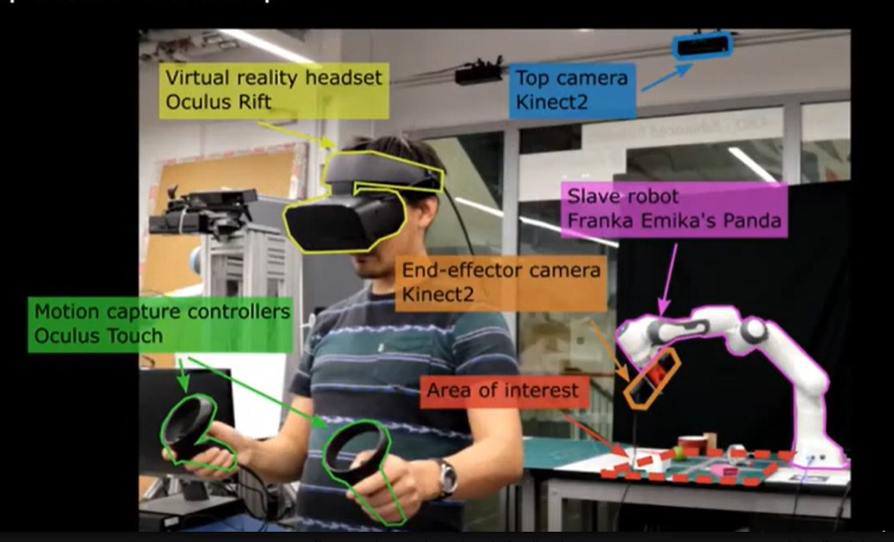

More information about VR and Telerobotics

Types of human-operator in VR
These head-tracker and sensor connect the end effector at a remote worksite to the hand position. To update the virtual environment in accordance with his or her directions the human operator works with the VR engine with the help of sensors. The human operator in VR is divided into 3 sub-systems, namely:
- Decisional man: Decides what tasks are to be performed within the VE.
- Sensory man: Visualizes the execution of the desired modifications and induces a control of physical man’s commands.
- Physical man: Uses body gestures or voice to command appropriate modifications of the VE.
The VR engine uses appropriate input interfaces to take commands from the physical man. It then uses output interfaces, such as visual displays (helmets, screens, etc.) and haptic displays (haptic feedback, force feedback, tactile devices), to address the man's entire sensory system.
Interaction of the operator with the virtual environment to provide real-time changes
Prerequisites
- OctoMap mode: OctoMap provides the mapping of 3D objects.
- RGB-D camera: RGB + Depth camera where the “Depth” provides grayscale maps of the same size as the RGB images. The levels of grey in the greyscale maps depict the distance to the camera of its corresponding RGB pixel.
- Live-poin cloud: A "live" point cloud is a set of data points in space generated in real-time by 3D scanners or other depth-sensing equipment. These points represent the external surfaces of objects in the environment around the scanner. The term "live" suggests that the data is continuously updated, reflecting any changes or movements in the environment, which is crucial for dynamic and accurate interaction in telerobotic systems.
The interaction of the operator with the virtual environment to provide real-time changes requires visualization of an accurate virtual environment that replicates the real-time changes and effects along with precise sensors/touch controllers to replicate the gestures accurately through the end-effector.
To provide an accurate virtual environment there are multiple solutions like placing a static camera to provide an overview of the area of interest and the other camera, placed at the end effector of the robotic arm to provide a detailed view of the area of interest. But this approach comes with its own limitations as it occupies more communication bandwidth than single camera mode. The limitation is solved by implementing a robotic end effector arm with an RGB-D camera to provide a detailed view along with OctoMap mode. This OctoMap requires a fraction of a single camera mode.
Interaction, the other important task is performed with the operator creating a persistent clone using naïve segmentation. If the live point cloud disappears then the grasp is performed on the clone. In a recent research performed in 2020, three types of grasping methods were proposed:
- Grasp by direct control: It is designed for direct teleoperation in which the operator drags the virtual end-effector to control the robot in real time.
- Grasp on pose: It is designed for supervised teleoperation the operator specifies the position of the grasp on the “live” point cloud. The desired grasp pose is then sent to the motion planner which proposes the grasp trajectory that can be previewed by the operator. Finally, the operator decides to reject or accept the trajectory
- Point and click: It takes advantage of automated grasp generation to further reduce the teleoperation task load. The idea is only to point at an object of interest and let the robot propose the grasp pose and the trajectory. We use the same pointing and segmentation method as in direct grasping. The resulting grasp pose is then passed to the motion planner similar to the Grasp on pose method. The operator previews the proposed grasp pose and trajectory and rejects or accepts them.
There exist various algorithms for proposing the grasp trajectory in methods like “Grasp on pose” and “Point and click”
- Rapidly exploring Random Tree (RRT): This algorithm is effective in high-dimensional spaces and works by randomly building a space-filling tree. The tree is constructed incrementally from randomly drawn samples from the search space and is biased to grow toward unexplored spaces.
- Probabilistic Roadmaps (PRM): Suitable for planning in spaces with multiple obstacles, PRM works by randomly sampling the search space and connecting these points to form a roadmap that captures the connectivity of the space.
- Point and click: It takes advantage of automated grasp generation to further reduce the teleoperation task load. The idea is only to point at an object of interest and let the robot propose the grasp pose and the trajectory. We use the same pointing and segmentation method as in direct grasping. The resulting grasp pose is then passed to the motion planner similar to the Grasp on pose method. The operator previews the proposed grasp pose and trajectory and rejects or accepts them.
1. Path Planning Algorithms:
- Grasp Quality Metrics: These algorithms evaluate the stability and feasibility of a proposed grasp using metrics like force closure, form closure, or the Ferrari-Canny metric.
- Simulation-Based Approaches: Using physics engines to simulate interactions between the robot and objects to predict successful grasps.
2. Grasp Planning Algorithms:
- Analytical IK Solutions: Some simpler robotic configurations allow for direct mathematical solutions to inverse kinematics problems.
- Numerical IK Solutions: For more complex configurations, iterative methods that numerically solve the IK equations can be used to find joint angles that achieve the desired end-effector position and orientation.
3. Inverse Kinematics (IK):
Integrating VR and Telerobotics with the help of such systems not only aids in more intuitive planning but also enhances the precision of remote operations, as operators can better perceive spatial relationships and potential obstructions in real time.